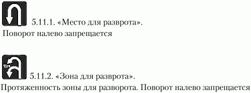
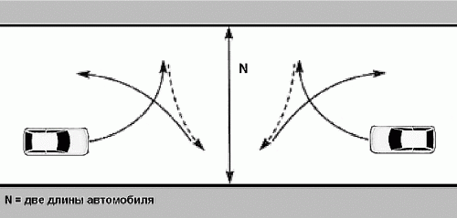

Перекрестки и развороты
Совет № 49 Когда вы стоите на перекрестке в ожидании поворота (например, на светофоре), держите колеса прямо!
Ведь если кто-то въедет в корму вашего авто, то вы поедите прямо, а не на встречную полосу или в соседний ряд (или на тротуар).
Совет № 50 Даже когда вы уже остановились на перекрестке, посматривайте в зеркало заднего видаЕсли вы видите, что кто-то не успевает затормозить, попытайтесь протянуть немного вперед. Обычно те самые полметра спасают ситуацию.
Совет № 51 Если из-за ограниченной видимости выполнить поворот сложно и нет светофора, а ждать нет времени, нужно с очень низкой скоростью «высовываться» и постараться, не подставив свою машину под плотный поток на главной дороге, оценить ситуацию и в удобный момент произвести поворотВодители бывают разными – умными, не очень умными, тупыми и совсем тупыми. Рассмотрим небольшую ситуацию, с которой, к сожалению, приходится сталкиваться довольно часто. Представьте, что вы выезжаете с второстепенной дороги на довольно загруженную главную дорогу. Светофора нет, а только знак «Уступи дорогу». Вам нужно повернуть налево, но слева от вас очень близко к перекрестку кто-то припарковал машину. Как назло она глухо тонирована или вообще – микроавтобус или джип. Видимость никакая. Что делать?
Из-за ограниченной видимости выполнить поворот налево очень сложно. Так как светофора нет, ждать, что наступит «ваша очередь», не приходится. Вам нужно потихоньку (с очень низкой скоростью) «высовываться» и стараться не подставить свою машину под плотный поток на главной дороге. Когда видимость станет лучше, вам останется лишь оценить дорожную обстановку – скорость других участников, безопасность маневра – и выполнить поворот.
Совет № 52 Если перекресток оснащен светофором, начинайте движение только на зеленый свет. Особое внимание обратите на стрелку светофора, указывающую направление движения (если она есть)Теперь представим ситуацию. Вам нужно повернуть налево, но понятно, вы должны пропустить транспортные средства, движущиеся со встречного направления прямо и направо. Поэтому вы выезжаете на середину перекрестка и ждете вашего «звездного часа». С одной стороны, правильно – ведь, когда загорится желтый и поток машин со встречного направления иссякнет, вы сможете беспрепятственно проехать. Но не нужно выезжать на середину перекрестка, если там уже кто-то находится. Он-то успеет проехать, а вы уже будете нарушать, потому что будете двигаться на красный свет. Да и культура наших водителей оставляет желать лучшего – далеко не всегда вас пропустят, в результате на дороге образуется затор – вы будете препятствием для движения транспорта в поперечном направлении. Мало того что это нарушение ПДД (п. 13.2), но чувствовать вы себя будете не очень комфортно, особенно когда другие водители будут выкрикивать нецензурные выражения в ваш адрес.
Довольно часто светофоры оборудуются стрелками, указывающими направление движения. Например, у светофора может быть обычный зеленый сигнал и возле него зеленая стрелка налево. Так вот, если горит зеленый, вы можете ехать прямо и направо. При повороте налево вы должны пропустить весь транспортный поток, движущийся со встречного направления. Но обычно в этом нет необходимости, потому что нужно дождаться стрелки налево, и тогда вы беспрепятственно сможете проехать перекресток.
Если перекресток оснащен светофором, начинайте движение только на зеленый свет.
Еще хочется сказать о стрелке, указывающей направление. Если она загорается вместе с зеленым сигналом светофора, то все, что было сказано выше, – верно. Если же стрелка загорелась вместе с желтым или красным сигналом светофора, тогда вы можете начинать движение, но при этом должны уступить дорогу транспортным средствам, движущимся с других направлений.
Помните о трамваях – у них всегда преимущество. Если сигнал светофора или регулировщика разрешает движением и вам, и трамваю, то вы должны уступить дорогу трамваю. Но если у вас горит стрелка и зеленый сигнал светофора, то у трамвая горит тоже стрелка, но красный сигнал светофора. В этом случае вы можете проезжать, а трамвай должен уступить вам дорогу.
Иногда при переезде через перекресток в вашем направлении могут быть несколько светофоров и несколько стоп-линий. В этом случае вы должны руководствоваться сигналами всех светофоров, которые находятся при въезде на перекресток.
Совет № 53 При проезде нерегулируемого перекрестка неравнозначных дорог водитель, движущийся по второстепенной дороге, должен уступить дорогу транспортным средствам, приближающимся по главной, независимо от направления их дальнейшего движенияНерегулируемые перекрестки могут быть двух типов – перекресток равнозначных дорог и неравнозначных дорог. Во втором случае водитель, движущийся по второстепенной дороге, должен уступить дорогу транспортным средствам, приближающимся по главной, независимо от направления их дальнейшего движения.
На перекрестке равнозначных дорог действует правило «помехи справа», то есть при повороте налево или развороте водитель обязан уступить дорогу транспортным средствам, движущимся по равнозначной дороге со встречного направления прямо или направо.
Не забываем о трамваях: на любом перекрестке (равнозначных или неравнозначных дорог) трамвай имеет преимущество!
И еще: если вы не можете определить, по какой дороге вы двигаетесь – по главной или второстепенной, тогда вы должны считать, что находитесь на второстепенной дороге.
Совет № 54 Не обгоняйте на перекрестках! На них обгон запрещен!Но опять-таки перекрестки бывают разными. На регулируемых перекрестках обгон с выездом на встречную полосу запрещен в любом случае. А вот в случае с нерегулируемыми перекрестками есть нюансы. На нерегулируемых перекрестках обгон запрещен при движении по дороге, не являющейся главной (за исключением обгона на перекрестках с круговым движением, обгона двухколесных транспортных средств без бокового прицепа и разрешенного обгона справа).
Также на перекрестке запрещено движение задним ходом. Об этом тоже нужно помнить.
Разворот не перекрестке обычно разрешен, если нет знака, запрещающего разворот.
Совет № 55 При развороте нужно быть очень осторожным, поскольку внимательно смотреть нужно не только вперед, но и назад и по сторонамПомните, что разворот можно выполнять не везде. Перед выполнением разворота убедитесь в том, что:
• разворот разрешен – дорожная разметка прерывистая или отсутствует, а также нет запрещающего знака «Разворот запрещен»;
• впереди дорога свободна (или встречная машина далеко, и вы можете безопасно выполнить маневр);
• сзади за вами никого нет, или машина находится на достаточном расстоянии от вас – ведь вам нужно будет притормозить и развернуться – а вдруг сзадиидущая машина «надумала» выходить на обгон?
Если вы убедились в безопасности маневра, тогда включите указатель поворота и выполните разворот. Возможно, разворот нужно будет выполнить в несколько приемов (если пространство для разворота ограниченно). В этом случае убедитесь в безопасности маневра. Если вы видите, что разворот придется осуществить в несколько приемов и вы выполнить его не успевате (поскольку по встречной полосе приближается машина), то лучше и не начинайте разворот.
Совет № 56 Помните: что есть места, в которых разворачиваться нельзя!Помните, что разворот запрещен:
• на пешеходных переходах;
• в тоннелях;
• на мостах, путепроводах, эстакадах и под ними;
• на железнодорожных переездах;
• в местах с видимостью дороги хотя бы в одном направлении менее 100 м;
• на автомагистралях;
• в местах остановок маршрутных транспортных средств.
Совет № 57 Обратите внимание на различие в знаках, разрешающих разворотНа то, что разворот разрешен, явно указывают знаки 5.11.1 и 5.11.2 (рис. 2).

Рис. 2. Дорожные знаки, разрешающие разворот.
Первый знак – это «Место для разворота», причем этот же знак запрещает поворот налево. Второй знак – это «Зона для разворота», он указывает протяженность зоны для разворота, поворот налево также запрещен.
Совет № 58 Если пространство ограниченно, тогда разворот придется выполнять в несколько приемов, и на это уйдет чуть больше времени, чем при обычном разворотеСначала вам нужно будет повернуть в сторону разворота, доехать до препятствия, сдать назад, вывернув руль в противоположную сторону, а затем завершить маневр. Схема такого разворота изображена на рис. 3.

Рис. 3. Разворот в несколько приемов.
Разворот в несколько приемов требует больше времени, чем обычный разворот, поэтому перед его началом убедитесь, что вам хватит времени, чтобы закончить маневр, чтобы не создать помех для других участников движения.
У себя возле гаража можете крутиться столько, сколько вам хочется.
Совет № 59 Если вы ночью подъезжаете к закрытому повороту (то есть вы не видите, что происходит за поворотом) или неосвещенному перекрестку, сбавьте скорость и поморгайте несколько раз дальним светомВодитель встречного авто заметит ваши сигналы, сбавит скорость и выполнит скорость по ближнему радиусу. То же самое должны сделать и вы, если кто-то из закрытого поворота поморгал фарами.
Особенно этот совет будет полезен на горном серпантине, где повороты очень крутые и их очень много. Возможно, он сэкономит вам и деньги, и нервы, и время.
Совет № 60 Если из закрытого поворота медленно выезжает грузовик (старый автобус или другое большое и не очень скоростное транспортное средство), скиньте скорость: за тихоходом может быть водитель, которому надоело тащиться, и он вот-вот пойдет на обгон